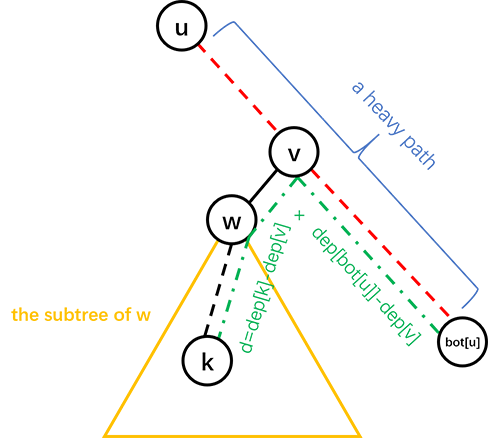

树链剖分
引入
树链剖分用于将树分割成若干条链的形式，以维护树上路径的信息．
具体来说，将整棵树剖分为若干条链，使它组合成线性结构，然后用其他的数据结构维护信息．
树链剖分 （树剖/链剖）有多种形式，如 重链剖分 ，长链剖分 和用于 Link/cut Tree 的剖分（有时被称作「实链剖分」）．大多数情况下（没有特别说明时），「树链剖分」都指「重链剖分」．
重链剖分可以将树上的任意一条路径划分成不超过 𝑂(log𝑛)O(logn) 条连续的链，每条链上的点深度互不相同（即是自底向上的一条链，链上所有点的 LCA 为链的一个端点）．
条连续的链，每条链上的点深度互不相同（即是自底向上的一条链，链上所有点的 LCA 为链的一个端点）．
重链剖分还能保证划分出的每条链上的结点 DFS 序连续，因此可以方便地用一些维护序列的数据结构（如线段树）来维护树上路径的信息．例如：
- 修改 树上两点之间的路径上 所有点的值．
- 查询 树上两点之间的路径上 结点权值的 和/极值/其它（在序列上可以用数据结构维护，便于合并的信息） ．
除了配合数据结构来维护树上路径信息，树剖还可以用来 𝑂(log𝑛)O(logn)（且常数较小）地求 LCA．在某些题目中，还可以利用其性质来灵活地运用树剖．
重链剖分
我们给出一些定义：
定义 重子结点 表示其子结点中子树最大的子结点．如果有多个子树最大的子结点，取其一．如果没有子结点，就无重子结点．
定义 轻子结点 表示剩余的所有子结点．
从这个结点到重子结点的边为 重边 ．
到其他轻子结点的边为 轻边 ．
若干条首尾衔接的重边构成 重链 ．
把落单的结点也当作重链，那么整棵树就被剖分成若干条重链．
如图：

实现
树剖的实现分两个 DFS 的过程．伪代码如下：
第一个 DFS 记录每个结点的父结点（𝑓𝑎𝑡ℎ𝑒𝑟father）、深度（𝑑𝑒𝑝𝑡ℎdepth）、子树大小（𝑠𝑖𝑧𝑒size）、重子结点（ℎ𝑠𝑜𝑛hson）．
TREE-BUILD (𝑢,𝑑𝑒𝑝)1𝑢.ℎ𝑠𝑜𝑛←02𝑢.ℎ𝑠𝑜𝑛.𝑠𝑖𝑧𝑒←03𝑢.𝑑𝑒𝑝𝑡ℎ←𝑑𝑒𝑝4𝑢.𝑠𝑖𝑧𝑒←15𝐟𝐨𝐫 each son 𝑣 of 𝑢6𝑢.𝑠𝑖𝑧𝑒←𝑢.𝑠𝑖𝑧𝑒+TREE-BUILD (𝑣,𝑑𝑒𝑝+1)7𝑣.𝑓𝑎𝑡ℎ𝑒𝑟←𝑢8𝐢𝐟 𝑣.𝑠𝑖𝑧𝑒>𝑢.ℎ𝑠𝑜𝑛.𝑠𝑖𝑧𝑒9𝑢.ℎ𝑠𝑜𝑛←𝑣10𝐫𝐞𝐭𝐮𝐫𝐧 𝑢.𝑠𝑖𝑧𝑒TREE-BUILD (u,dep)1u.hson←02u.hson.size←03u.depth←dep4u.size←15for each son v of u6u.size←u.size+TREE-BUILD (v,dep+1)7v.father←u8if v.size>u.hson.size9u.hson←v10return u.size
第二个 DFS 记录所在链的链顶（𝑡𝑜𝑝top，应初始化为结点本身）、重边优先遍历时的 DFS 序（𝑑𝑓𝑛dfn）、DFS 序对应的结点编号（𝑟𝑎𝑛𝑘rank）．
TREE-DECOMPOSITION (𝑢,𝑡𝑜𝑝)1𝑢.𝑡𝑜𝑝←𝑡𝑜𝑝2𝑡𝑜𝑡←𝑡𝑜𝑡+13𝑢.𝑑𝑓𝑛←𝑡𝑜𝑡4𝑟𝑎𝑛𝑘(𝑡𝑜𝑡)←𝑢5𝐢𝐟 𝑢.ℎ𝑠𝑜𝑛 is not 06TREE-DECOMPOSITION (𝑢.ℎ𝑠𝑜𝑛,𝑡𝑜𝑝)7𝐟𝐨𝐫 each son 𝑣 of 𝑢8𝐢𝐟 𝑣 is not 𝑢.ℎ𝑠𝑜𝑛9TREE-DECOMPOSITION (𝑣,𝑣)TREE-DECOMPOSITION (u,top)1u.top←top2tot←tot+13u.dfn←tot4rank(tot)←u5if u.hson is not 06TREE-DECOMPOSITION (u.hson,top)7for each son v of u8if v is not u.hson9TREE-DECOMPOSITION (v,v)
以下为代码实现．
我们先给出一些定义：
- fa(𝑥)fa(x) 表示结点 𝑥x 在树上的父亲．
- dep(𝑥)dep(x) 表示结点 𝑥x 在树上的深度．
- siz(𝑥)siz(x) 表示结点 𝑥x 的子树的结点个数．
- son(𝑥)son(x) 表示结点 𝑥x 的 重儿子 ．
- top(𝑥)top(x) 表示结点 𝑥x 所在 重链 的顶部结点（深度最小）．
- dfn(𝑥)dfn(x) 表示结点 𝑥x 的 DFS 序 ，也是其在线段树中的编号．
- rnk(𝑥)rnk(x) 表示 DFS 序所对应的结点编号，有 rnk(dfn(𝑥)) =𝑥rnk(dfn(x))=x．
我们进行两遍 DFS 预处理出这些值，其中第一次 DFS 求出 fa(𝑥)fa(x)，dep(𝑥)dep(x)，siz(𝑥)siz(x)，son(𝑥)son(x)，第二次 DFS 求出 top(𝑥)top(x)，dfn(𝑥)dfn(x)，rnk(𝑥)rnk(x)．
---|---
## 重链剖分的性质
**树上每个结点都属于且仅属于一条重链** ．
重链开头的结点一定不是重子结点（因为重链开头的结点要么是根，要么是其父亲结点的轻子结点）．
所有的重链将整棵树 **完全剖分** ．
在剖分时 **重边优先遍历** ，最后树的 DFS 序上，重链内的 DFS 序是连续的．按 DFN 排序后的序列即为剖分后的链．
一棵子树内的 DFS 序是连续的．
可以发现，当我们向下经过一条 **轻边** 时，所在子树的大小至少会除以二．
因此，对于树上的任意一条路径，把它拆分成从 [LCA](../lca/) 分别向两边往下走，分别最多走 𝑂(log𝑛)O(logn) 次，因此，树上的每条路径都可以被拆分成不超过 𝑂(log𝑛)O(logn) 条重链．
怎么有理有据地卡树剖
一般情况下树剖的 𝑂(log𝑛)O(logn) 常数不满很难卡，如果要卡只能建立二叉树深度低．
于是我们可以考虑折中方案．
我们建立一棵 √𝑛n 个结点的二叉树．对于每个结点到其儿子的边，我们将其替换成一条长度为 √𝑛n 的链．
这样子我们可以将随机询问轻重链切换次数卡到平均 log𝑛2logn2 次，同时有 𝑂(√𝑛log𝑛)O(nlogn) 的深度．
加上若干随机叶子看上去可以卡树剖．但是树剖常数小有可能卡不掉．
## 常见应用
### 路径上维护
用树链剖分求树上两点路径权值和，伪代码如下：
TREE-PATH-SUM (𝑢,𝑣)1𝑡𝑜𝑡←02𝐰𝐡𝐢𝐥𝐞 𝑢.𝑡𝑜𝑝 is not 𝑣.𝑡𝑜𝑝3𝐢𝐟 𝑢.𝑡𝑜𝑝.𝑑𝑒𝑝𝑡ℎ<𝑣.𝑡𝑜𝑝.𝑑𝑒𝑝𝑡ℎ4SWAP(𝑢,𝑣)5𝑡𝑜𝑡←𝑡𝑜𝑡+sum of values between 𝑢 and 𝑢.𝑡𝑜𝑝6𝑢←𝑢.𝑡𝑜𝑝.𝑓𝑎𝑡ℎ𝑒𝑟7𝑡𝑜𝑡←𝑡𝑜𝑡+sum of values between 𝑢 and 𝑣8𝐫𝐞𝐭𝐮𝐫𝐧 𝑡𝑜𝑡TREE-PATH-SUM (u,v)1tot←02while u.top is not v.top3if u.top.depth<v.top.depth4SWAP(u,v)5tot←tot+sum of values between u and u.top6u←u.top.father7tot←tot+sum of values between u and v8return tot
链上的 DFS 序是连续的，可以使用线段树、树状数组维护．
每次选择深度较大的链往上跳，直到两点在同一条链上．
同样的跳链结构适用于维护、统计路径上的其他信息．
### 子树维护
有时会要求，维护子树上的信息，譬如将以 𝑥x 为根的子树的所有结点的权值增加 𝑣v．
在 DFS 搜索的时候，子树中的结点的 DFS 序是连续的．
每一个结点记录 bottom 表示所在子树连续区间末端的结点．
这样就把子树信息转化为连续的一段区间信息．
### 求最近公共祖先
不断向上跳重链，当跳到同一条重链上时，深度较小的结点即为 LCA．
向上跳重链时需要先跳所在重链顶端深度较大的那个．
参考代码：
---|---
换根操作
考虑一类新的问题：除了树链剖分支持的基本操作外，加上了换根操作．
由于树链剖分维护的信息是静态的，不支持动态修改．同时，不可能每次换根后重新预处理信息，复杂度过高．那么，需要充分利用之前得到的信息来帮助解决换根操作．
对于路径修改和查询操作，由于树上两点之间的简单路径唯一，所以不会发生变化，与正常的处理方式相同．
对于子树修改和查询操作，一般的思路就是将换根后的子树映射到原来的子树．这需要分类讨论操作子树的根结点、换根后的整个树的根结点，以及原来树的根结点的相对位置关系．具体细节详见 后文例题．
例题
本文通过例题展示如何应用重链剖分．首先是一道模板题．
对一棵有 𝑛n 个结点，结点带权值的静态树，进行三种操作共 𝑞q 次：
- 修改单个结点的权值；
- 查询 𝑢u 到 𝑣v 的路径上的最大权值；
- 查询 𝑢u 到 𝑣v 的路径上的权值之和．
保证 1 ≤𝑛 ≤300001≤n≤30000，0 ≤𝑞 ≤2000000≤q≤200000．
解答
根据题面以及前文所述性质，线段树需要维护三种操作：
- 单点修改；
- 区间查询最大值；
- 区间查询和．
单点修改很容易实现．
由于子树的 DFS 序连续（无论是否树剖都是如此），修改一个结点的子树只用修改这一段连续的 DFS 序区间．
问题是如何修改/查询两个结点之间的路径．
考虑我们是如何用 倍增法求解 LCA 的．首先我们 将两个结点提到同一高度，然后将两个结点一起向上跳 ．对于树链剖分也可以使用这样的思想．
在向上跳的过程中，如果当前结点在重链上，向上跳到重链顶端，如果当前结点不在重链上，向上跳一个结点．如此直到两结点相同．沿途更新/查询区间信息．
对于每个询问，最多经过 𝑂(log𝑛)O(logn) 条重链，每条重链上线段树的复杂度为 𝑂(log𝑛)O(logn)，因此总时间复杂度为 𝑂(𝑛log𝑛 +𝑞log2𝑛)O(nlogn+qlog2n)．实际上重链个数很难达到 𝑂(log𝑛)O(logn)（可以用完全二叉树卡满），所以树剖在一般情况下常数较小．
参考代码
---|---
然后是一道带换根操作的重链剖分模板题．
[LOJ 139. 树链剖分](https://loj.ac/p/139)
给定一棵 𝑛n 个结点的树（初始根结点为 11），要求支持如下的 𝑚m 次操作：
* 换根，将结点 𝑢u 设为新的树根．
* 修改路径上结点权值，将结点 𝑢u 和结点 𝑣v 之间路径上的所有结点（包括这两个结点）的权值增加 𝑤w．
* 修改子树上结点权值，将以结点 𝑢u 为根的子树上的所有结点的权值增加 𝑤w．
* 询问路径，询问结点 𝑢u 和结点 𝑣v 之间路径上的所有结点（包括这两个结点）的权值和．
* 询问子树，询问以结点 𝑢u 为根的子树上的所有结点的权值和．
1 ≤𝑛,𝑚 ≤1051≤n,m≤105．
解法
先以 11 作为根结点跑 DFS，预处理出树链剖分所必需的信息．为方便表述，称以 11 为根结点的树为「原始树」，而称经历了若干次换根操作之后的树为「当前树」．在操作过程中，需要维护 𝑟𝑜𝑜𝑡root 为当前树的根结点．由于线段树中存储的是原始树的 DFS 序的信息，所以每次查询和修改时，都需要将当前树的查询和修改操作转换到原始树上．
对于换根操作，我们直接令 𝑟𝑜𝑜𝑡 ←𝑢root←u．对于路径操作，由于换根不影响路径，所以直接在原始树上做对应操作即可．
重点考虑操作子树的问题．我们根据 𝑢u 和 𝑟𝑜𝑜𝑡root 的相对位置关系做分类讨论：
* 𝑢 =𝑟𝑜𝑜𝑡u=root：这是最特殊的情况，相当于对整棵树做操作．为此，直接对线段树的根结点打上标记或查询答案即可．
* 𝑢u 是 𝑟𝑜𝑜𝑡root 在原始树上的祖先，即 𝑢u 位于 11 到 𝑟𝑜𝑜𝑡root 的简单路径上．
这是最值得注意的情况．定义 𝑣v 为原始树上 𝑢u 到 𝑟𝑜𝑜𝑡root 的简单路径上除 𝑢u 以外的深度最小的点，可以发现原始树上 𝑣v 及其子树以外的部分恰好是当前树上 𝑢u 及其子树．
考虑如何高效找到 𝑣v．我们先令 𝑣 ←𝑟𝑜𝑜𝑡v←root，然后沿着重链往上跳直到 dep(top(𝑣)) ≤dep(𝑢) +1dep(top(v))≤dep(u)+1．
* 若 dep(top(𝑣)) =dep(𝑢) +1dep(top(v))=dep(u)+1，令 𝑣 ←top(𝑣)v←top(v)．此时，𝑣v 是 𝑢u 的一个轻儿子．
* 若 dep(top(𝑣)) <dep(𝑢) +1dep(top(v))<dep(u)+1，亦即 dep(top(𝑣)) ≤dep(𝑢)dep(top(v))≤dep(u)，这说明 𝑢,𝑣u,v 处在同一条重链上．根据同一条重链上 DFS 序连续的性质，所求的 𝑣v 必然满足 dfn(𝑣) =dfn(𝑢) +1dfn(v)=dfn(u)+1．所以，可以令 𝑣 ←rnk(dfn(𝑢) +1)v←rnk(dfn(u)+1)．
注意，这两种情形中可以合并：在跳完之后可以直接令
𝑣←rnk(dfn(top(𝑣))+dep(𝑢)+1−dep(top(𝑣))).v←rnk(dfn(top(v))+dep(u)+1−dep(top(v))).
容易验证，利用这一表达式找到的 𝑣v，和分类讨论找到的 𝑣v 是等价的．参考实现中就用到了这一表达式．
由于 𝑣v 子树覆盖的区间为 [dfn(𝑣),dfn(𝑣) +siz(𝑣))[dfn(v),dfn(v)+siz(v))，所以只需要对 [1,dfn(𝑣)) ∪[dfn(𝑣) +siz(𝑣),𝑛][1,dfn(v))∪[dfn(v)+siz(v),n] 操作即可．
* 其它情况．可以发现换根操作不会影响 𝑢u 的子树，用正常的方式维护即可．
这样做的复杂度与不带换根的做法相同，均为 𝑂(𝑛log2𝑛)O(nlog2n)．
参考代码
---|---
最后是一道交互题，也是树剖的非传统应用．
有一棵以 11 为根的二叉树，你可以询问任意两点之间的距离，求出每个点的父亲．
结点数不超过 30003000，你最多可以进行 3000030000 次询问．
解法
首先可以通过 𝑛 −1n−1 次询问确定每个结点的深度．
然后考虑按深度从小到大确定每个结点的父亲，这样的话确定一个结点的父亲时其所有祖先一定都是已知的．
确定一个结点的父亲之前，先对树已知的部分进行重链剖分．
假设我们需要在子树 𝑢u 中找结点 𝑘k 所在的位置，我们可以询问 𝑘k 与 𝑢u 所在重链的尾端的距离，就可以进一步确定 𝑘k 的位置，具体见图：

其中红色虚线是一条重链，𝑑d 是询问的结果即 𝑑𝑖𝑠(𝑘,𝑏𝑜𝑡(𝑢))dis(k,bot(u))，𝑣v 的深度为 (𝑑𝑒𝑝(𝑘) +𝑑𝑒𝑝(𝑏𝑜𝑡(𝑢)) −𝑑)/2(dep(k)+dep(bot(u))−d)/2．
这样的话，如果 𝑣v 只有一个儿子，𝑘k 的父亲就是 𝑣v，否则可以递归地在 𝑤w 的子树中找 𝑘k 的父亲．
时间复杂度 𝑂(𝑛2)O(n2)，询问复杂度 𝑂(𝑛log𝑛)O(nlogn)．
具体地，设 𝑇(𝑛)T(n) 为最坏情况下在一棵大小为 𝑛n 的树中找到一个新结点的位置所需的询问次数，可以得到：
𝑇(𝑛)≤{0𝑛=1𝑇(⌊𝑛−12⌋)+1𝑛≥2T(n)≤{0n=1T(⌊n−12⌋)+1n≥2
2999 +∑2999𝑖=1𝑇(𝑖) ≤299402999+∑i=12999T(i)≤29940，事实上这个上界是可以通过构造数据达到的，然而只要进行一些随机扰动（如对深度进行排序时使用不稳定的排序算法），询问次数很难超过 2100021000 次．
参考代码
---|---
## 长链剖分
长链剖分本质上就是另外一种链剖分方式．
定义 **重子结点** 表示其子结点中子树深度最大的子结点．如果有多个子树最大的子结点，取其一．如果没有子结点，就无重子结点．
定义 **轻子结点** 表示剩余的子结点．
从这个结点到重子结点的边为 **重边** ．
到其他轻子结点的边为 **轻边** ．
若干条首尾衔接的重边构成 **重链** ．
把落单的结点也当作重链，那么整棵树就被剖分成若干条重链．
如图（这种剖分方式既可以看成重链剖分也可以看成长链剖分）：

长链剖分实现方式和重链剖分类似，这里就不再展开．
### 常见应用
首先，我们发现长链剖分从一个结点到根的路径的轻边切换条数是 √𝑛n 级别的．
如何构造数据将轻重边切换次数卡满
我们可以构造这么一棵二叉树 T：
假设构造的二叉树参数为 𝐷D．
若 𝐷 ≠0D≠0, 则在左儿子构造一棵参数为 𝐷 −1D−1 的二叉树，在右儿子构造一个长度为 2𝐷 −12D−1 的链．
若 𝐷 =0D=0, 则我们可以直接构造一个单独叶结点，并且结束调用．
这样子构造一定可以将单独叶结点到根的路径全部为轻边且需要 𝐷2D2 级别的结点数．
取 𝐷 =√𝑛D=n 即可．
#### 长链剖分优化 DP
一般情况下可以使用长链剖分来优化的 DP 会有一维状态为深度维．
我们可以考虑使用长链剖分优化树上 DP．
具体的，我们每个结点的状态直接继承其重儿子的结点状态，同时将轻儿子的 DP 状态暴力合并．
[Codeforces 1009 F. Dominant Indices](http://codeforces.com/contest/1009/problem/F)
给定一棵有 𝑛n 个顶点的有根树，以顶点 11 作为根．
定义顶点 𝑥x 的深度数组为一个无限序列 [𝑑𝑥,0,𝑑𝑥,1,𝑑𝑥,2,…][dx,0,dx,1,dx,2,…]，其中 𝑑𝑥,𝑖dx,i 表示满足以下两个条件的顶点 𝑦y 的数量：
* 𝑥x 是 𝑦y 的祖先；
* 从 𝑥x 到 𝑦y 的简单路径恰好经过 𝑖i 条边．
顶点 𝑥x 的深度数组的主导下标（dominant index）（简称顶点 𝑥x 的主导下标）定义为一个下标 𝑗j，满足：
* 对于所有 𝑘 <𝑗k<j，都有 𝑑𝑥,𝑘 <𝑑𝑥,𝑗dx,k<dx,j；
* 对于所有 𝑘 >𝑗k>j，都有 𝑑𝑥,𝑘 ≤𝑑𝑥,𝑗dx,k≤dx,j．
请计算树中每个顶点的主导下标．
解答
我们设 𝑓𝑖,𝑗fi,j 表示在子树 i 内，和 i 距离为 j 的点数．
直接暴力转移时间复杂度为 𝑂(𝑛2)O(n2)
我们考虑每次转移我们直接继承重儿子的 DP 数组和答案，并且考虑在此基础上进行更新．
首先我们需要将重儿子的 DP 数组前面插入一个元素 1, 这代表着当前结点．
然后我们将所有轻儿子的 DP 数组暴力和当前结点的 DP 数组合并．
注意到因为轻儿子的 DP 数组长度为轻儿子所在重链长度，而所有重链长度和为 𝑛n．
也就是说，我们直接暴力合并轻儿子的总时间复杂度为 𝑂(𝑛)O(n)．
参考代码
---|---
注意，一般情况下 DP 数组的内存分配为一条重链整体分配内存，链上不同的结点有不同的首位置指针．
DP 数组的长度我们可以根据子树最深结点算出．
当然长链剖分优化 DP 技巧非常多，包括但是不仅限于打标记等等．这里不再展开．
参考 租酥雨的博客．
长链剖分求 k 级祖先
即询问一个点向父亲跳 𝑘k 次跳到的结点．
首先我们假设我们已经预处理了每一个结点的 2𝑖2i 级祖先．
现在我们假设我们找到了询问结点的 2𝑖2i 级祖先满足 2𝑖 ≤𝑘 <2𝑖+12i≤k<2i+1．
我们考虑求出其所在重链的结点并且按照深度列入表格．假设重链长度为 𝑑d．
同时我们在预处理的时候找到每条重链的根结点的 11 到 𝑑d 级祖先，同样放入表格．
根据长链剖分的性质，𝑘 −2𝑖 ≤2𝑖 ≤𝑑k−2i≤2i≤d, 也就是说，我们可以 𝑂(1)O(1) 在这条重链的表格上求出的这个结点的 𝑘k 级祖先．
预处理需要倍增出 2𝑖2i 次级祖先，同时需要预处理每条重链对应的表格．
预处理复杂度 𝑂(𝑛log𝑛)O(nlogn), 询问复杂度 𝑂(1)O(1)．
习题
- 「洛谷 P3379」【模板】最近公共祖先（LCA）（树剖求 LCA 无需数据结构，可以用作练习）
- 「JLOI2014」松鼠的新家（当然也可以用树上差分）
- 「HAOI2015」树上操作
- 「洛谷 P3384」【模板】重链剖分/树链剖分
- [「洛谷 P1505」[国家集训队] 旅游](https://www.luogu.com.cn/problem/P1505)
- 「NOI2015」软件包管理器
- 「SDOI2011」染色
- 「SDOI2014」旅行
- 「洛谷 P3979」遥远的国度
- 「POI2014」Hotel 加强版（长链剖分优化 DP）
- 攻略（长链剖分优化贪心）
本页面最近更新： 2026/3/4 00:42:25，更新历史 发现错误？想一起完善？在 GitHub 上编辑此页！ 本页面贡献者：Ir1d, ouuan, StudyingFather, hyp1231, Tiphereth-A, H-J-Granger, sshwy, countercurrent-time, Enter-tainer, greyqz, Marcythm, NachtgeistW, Xeonacid, zhouyuyang2002, CCXXXI, Chrogeek, Early0v0, hsfzLZH1, mgt, AngelKitty, c-forrest, ChungZH, cjsoft, diauweb, ezoixx130, ftxj, GekkaSaori, GoodCoder666, Henry-ZHR, Konano, LovelyBuggies, LuoshuiTianyi, Makkiy, minghu6, P-Y-Y, PotassiumWings, SamZhangQingChuan, sun2snow, Suyun514, weiyong1024, 2997ms, Alexander-a-l, amlhdsan, fearlessxjdx, forever516-hack, GavinZhengOI, Gesrua, Great-designer, HeRaNO, kenlig, ksyx, kxccc, LiserverYang, lychees, Macesuted, mao1t, Menci, Molmin, Peanut-Tang, SukkaW 本页面的全部内容在CC BY-SA 4.0 和 SATA 协议之条款下提供，附加条款亦可能应用